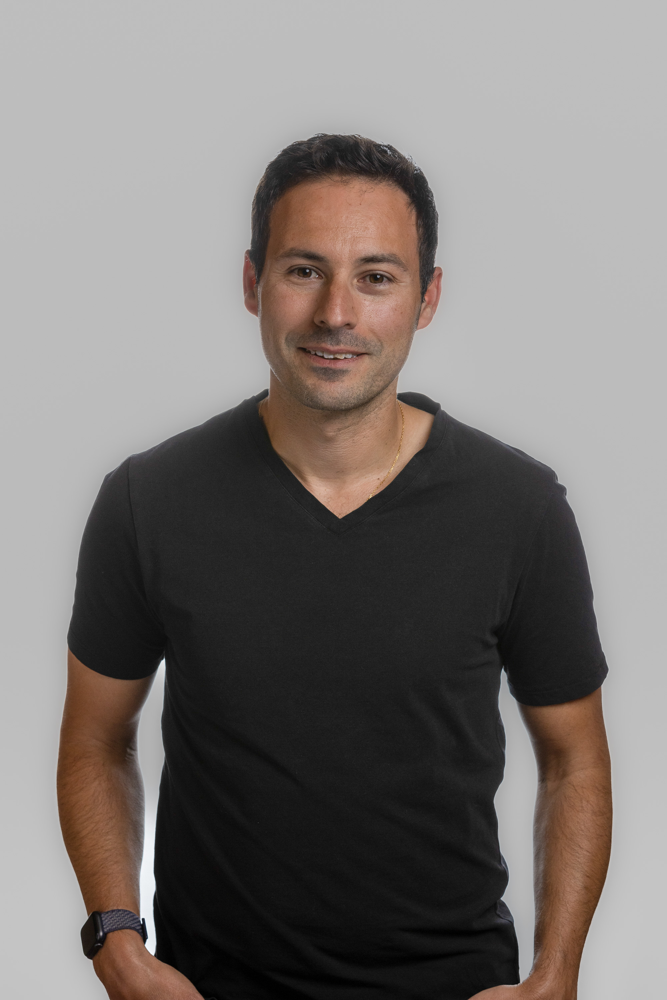

shuckerVC is an $8M Bay Area seed fund co-investing in oversubscribed rounds for B2B software founders — with hands-on operating support so they stay on product and customers.
We invest in early-stage, U.S.-based B2B software companies — industry and technology agnostic, with a bias toward technical founders chasing markets ripe for digital transformation. Our operating model earns us a seat in oversubscribed rounds alongside top lead investors.
So we built a different kind of fund. We embed a dedicated, full-time operator in every portfolio company to handle everything outside product and engineering — at cost, with zero equity dilution. It's the reason founders choose us, even with competing term sheets on the table.
Shipping fast is everything — yet founders get pulled into bookkeeping, hiring, and admin. We take that off the table so you stay on product and customers.
A full-time Support Partner embeds with your team to own back-office work — finance ops, hiring, vendors, and reporting.
Beyond the Support Partner: playbooks, software, and at-cost access to finance, people, and growth experts.
When a company joins the portfolio, we deploy a full-time W2 Support Partner hired through shuckerVC's LLC. The company pays their salary at cost — zero markup, zero dilution — and they embed with the leadership team through its highest-growth phase.
Everything that isn't product or engineering: recruiting and HR, monthly book closing and forecasting, growth and marketing, plus office ops, SOC2, and Series A prep.
Support Partners earn from our GP carry pool, not portfolio equity — so they're aligned with the whole fund's success, not the fate of any single company.
"Founders choose shuckerVC over other term sheets specifically for the Support Partner offering."
We believe conversational AI is the biggest leap in interfaces in 40 years. The startups capitalizing today become tomorrow's leaders.
{{ co.desc }}
{{ co.founderLine }}
{{ active.desc }}

Managing Partner
Managing Partner
Venture Partner
Support Partner
We co-invest in oversubscribed rounds alongside top lead investors.
Submit your company